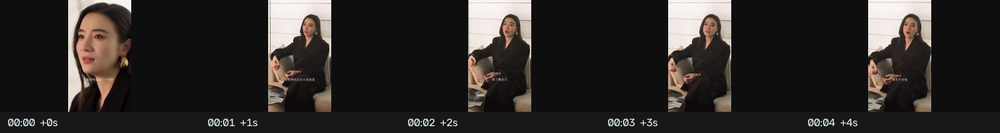
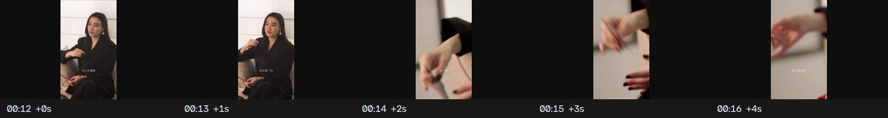
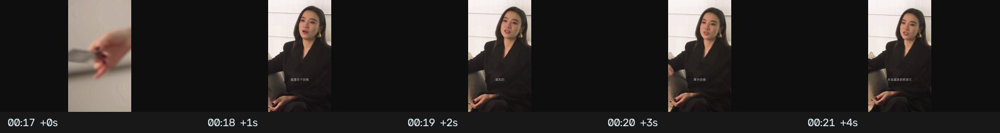
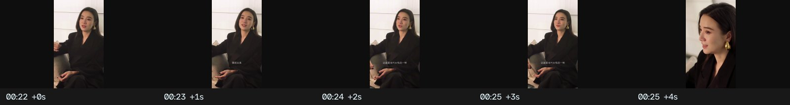
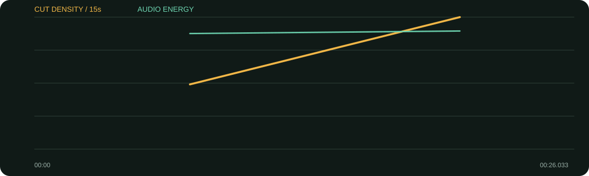

景别 / 机位系统
- 主体机位固定，主要靠中景与近景裁切变化
- 手部特写是独立插入镜头，也是隐藏语句压缩的安全位置
- 动作连续比转场效果更重要
- 同一轴线与相近色温让切换自然
26秒只用约7个候选镜头，却不显呆板：脸部承担观点，手部特写在句中做视觉逗号，回到脸时观众会重新感到人物力量。
口径说明：候选镜头由场景检测生成，闪光、人物快速动作、数字推拉和图形变化都可能误触发；逐秒重点由真实原片、字幕语义和全片总览人工选择。字幕来自本地中文语音识别，人名、品牌名与行业词可能有误，不把自动转写当逐字稿。
| 时间 | 章节 | 内容推进 | 剪辑任务 |
|---|---|---|---|
| 00:00–00:09 | 定义当代女孩 | 更了解自己、更忠于自我。 | 先用脸部近景建立态度。 |
| 00:09–00:19 | 具体化力量 | 把需求、情感、情绪放在第一位。 | 手部特写在列举中插入，形成视觉逗号。 |
| 00:19–00:26 | 结论 | 忠于并诚实展现自我。 | 回到脸部，靠完整句收束。 |
唯一关键B-roll是手部/动作细节，它既让画面动起来，也能遮住A-roll的压缩点。
综合音轨能量稳定且人声突出；当前未分离配乐，无法确认具体音乐变化。
每张长图从左到右为真实的连续秒点。重点不是记住截图，而是看清一组画面怎样“进入—完成任务—退出”。

画面事实不抢跑切镜，先让观众进入人物状态。
怎么复现开场至少保留一个完整主谓句。

画面事实手势与列举内容同步，画面有运动但轴线不乱。
怎么复现拍摄时补10秒手部连续动作，剪辑时用J-cut保留原声。

画面事实结论前回脸，让观点重新归属人物。
怎么复现细节镜头不要盖住最关键的表情和结论。

画面事实近景延长，避免结尾被音乐或转场抢走。
怎么复现保留句尾与一个微表情后再切黑。

| 观察项 | 15秒窗口 |
|---|---|
| 视觉最密 | 00:15–00:26（16.3 候选切镜/分）；00:00–00:15（8.0 候选切镜/分） |
| 视觉最缓 | 00:00–00:15（8.0 候选切镜/分）；00:15–00:26（16.3 候选切镜/分） |
| 综合音轨最强 | 00:15–00:26（-14.7 dBFS）；00:00–00:15（-15.6 dBFS） |
“视觉最密/最缓”基于自动候选切镜；“综合音轨最强”包含人声、环境声、音乐和音效，不能单独当作配乐音量。平均综合音轨为 -15.22 dBFS，最高15秒窗口 -14.73 dBFS，最低15秒窗口 -15.60 dBFS。
| # | 入点 | 出点 | 时长 | 代表帧秒点 | 证据 |
|---|---|---|---|---|---|
| 1 | 00:00.000 | 00:04.333 | 4.33s | 0.750000s | 自动候选 |
| 2 | 00:04.333 | 00:14.000 | 9.67s | 5.083333s | 自动候选 |
| 3 | 00:14.000 | 00:17.033 | 3.03s | 14.750000s | 自动候选 |
| 4 | 00:17.033 | 00:20.000 | 2.97s | 17.783333s | 自动候选 |
| 5 | 00:20.000 | 00:24.000 | 4.00s | 20.750000s | 自动候选 |
| 6 | 00:24.000 | 00:25.033 | 1.03s | 24.465000s | 自动候选 |
| 7 | 00:25.033 | 00:26.033 | 1.00s | 25.483333s | 自动候选 |